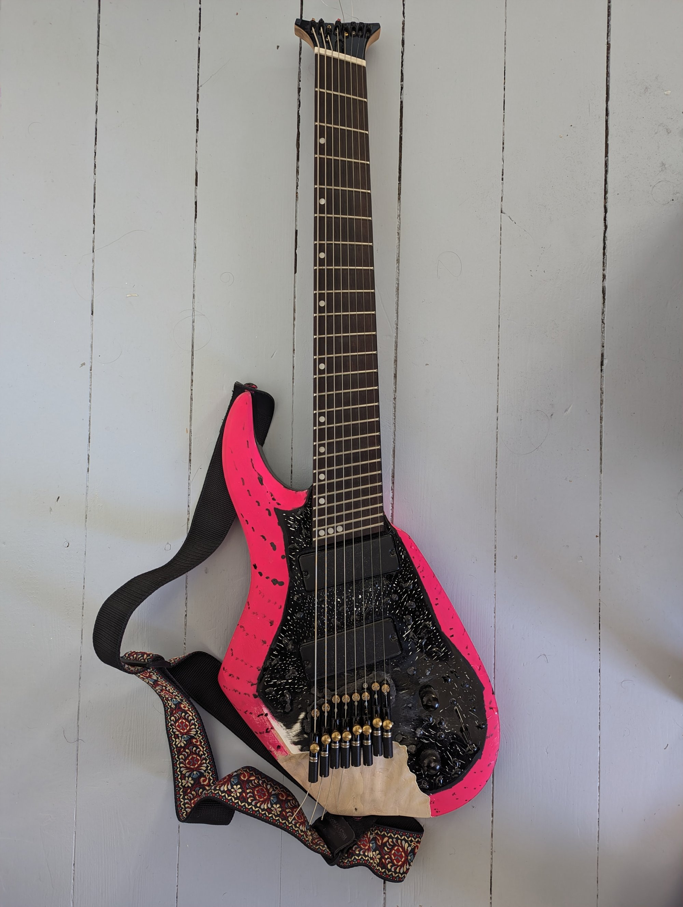
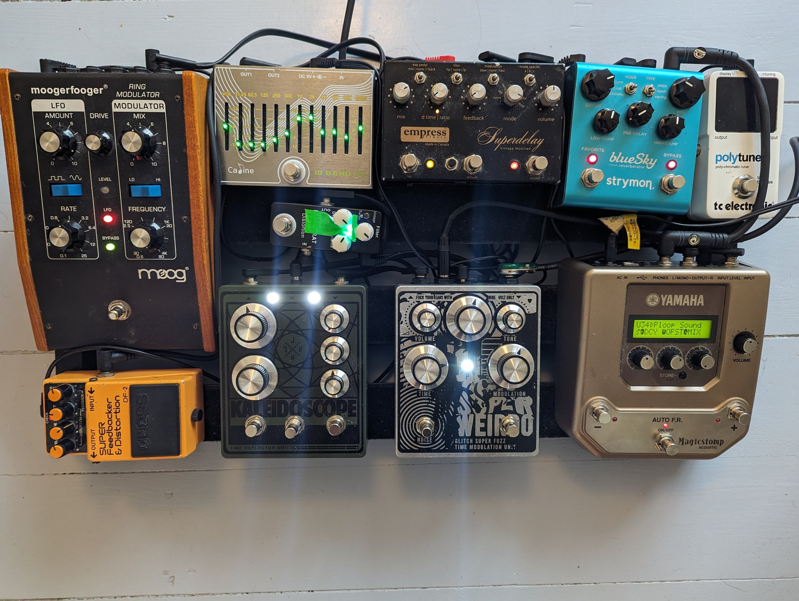
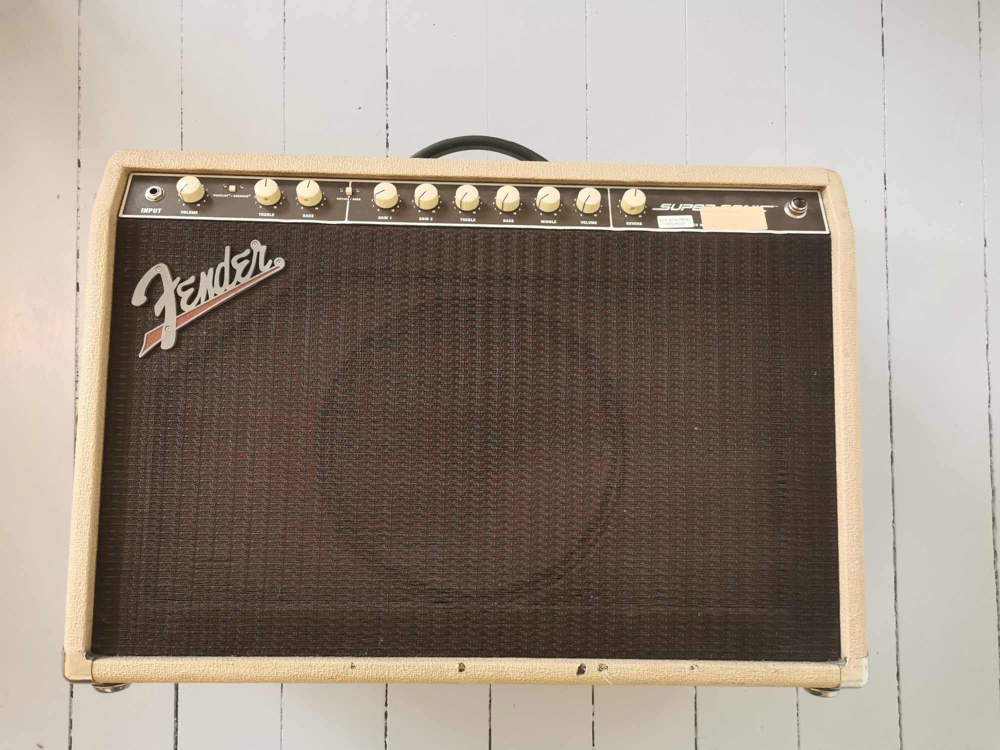

Om kunstneren
En reise gjennom lyd
John Arne Rånes er en eksperimentell gitarist fra Norge, nå bosatt i København. Med fokus på improvisasjon, noise og elektronikk utforsker han grensene mellom musikk og lyd.
Han er kjent for sitt unike instrument Gitar Ordinarium — en spesialbygd gitar med 6 sustainere, laget av gitarmaker Jens Erik Larsen.
John Arne er aktiv i flere prosjekter inkludert Statoil, Ymse Impro, Anorektum, og diverse soloverk.
6+
Aktive prosjekter
15+
Utgivelser
CPH
Basert i


Instrumenter
Utstyr
Gitarer og verktøy brukt til å skape lydene

Gitar Ordinarium
Et unikt instrument bygget av gitarmaker Jens Erik Larsen med 6 sustainere.
Mer info
Duesenberg Starplayer TV
Min andre gitar, kjøpt i 2009.

Gibson ES-125TC
Kjøpt i 2010, i New York. Fra en gang på 60-tallet.

Modifisert 8-strenger
En modifisert Harley Benton. Under utvikling.

Pedalbrett
Pedalene som er i bruk for øyeblikket.

Fender Supersonic
En forsterker jeg har brukt siden 2010.
Oppdateringer
Nyheter
Booking & Samarbeid
Ta kontakt
Tilgjengelig for konserter, samarbeid, sesjoner og bestillingsverk.
Klikk for å vise e-post